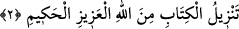

alçaltıcı bir azap vardır!
10. Ötelerinde de cehennem vardır. Kazandıkları şeyler de, Allah’ı bırakıp
edindikleri dostlar da onlara hiçbir fayda vermez. Büyük azap onlaradır.
11. İşte bu Kur’an, bir hidâyettir. Rablerinin âyetlerini inkâr edenlere gelince,
onlara en kötüsünden, elem verici bir azap vardır.
Bu sûre “Hâ Mîm” sûresidir.
et-Te’vilâtu’n- Necmiyye’de şöyle denilmiştir. Allah Teâlâ “hâ” ile hayatına “mîm”
ile meveddetine/sevgisine işâret etmektedir. Allah Teâlâ sanki şöyle buyurmuş oluyor:
“Hayatıma ve dostlarıma olan sevgime yemin olsun ki Bana, dostlarıma kavuşmaktan
daha sevimli bir şey yoktur. Yine Benim dostlarımın bana kavuşmasından daha sevimli
ve daha değerli hiçbir şey olamaz.”
Arâisu’l-Baklî’ de şöyle denilmektedir: Burada “hâ” Allah Teâlâ’nın hayat denizinde
ruhların çalkalanıp dalgalandığına; “mîm” ise, bütün sır ve esrârın Allah Teâlâ’nın
muhabbet meydanlarında zâhir olup coştuğuna delâlet eder.
Fakîr (Bursevî) der ki: “Hâ” ezelî olan ilk hubba/sevgiye delâlet eder. Bundan dolayı
burada da “hâ” takdim edilmiştir. “Mîm” ise sonradan meydana gelecek olan mârifet-i
ebediyyeye işâret etmektedir. “Mîm” in sonraya bırakılması da bunun içindir. Allah
Teâlâ’nın Dâvûd (a.s.)’a: “Ben gizli bir hazine idim bilinmeyi sevdim, bilinmek için
mahlûkâtı yarattım” buyurması da buna delâlet etmektedir. Zira bu hadis-i kudsîde
muhabbet, mârifetten öncedir. Tabiî olarak bu durumun Allah’tan kula gelişi böyledir.
Kuldan Allah’a yükselişi ise tam tersinedir. Yâni kul önce mârifetullah sahibi olacak,
sonra muhabbet elde edecektir. Bu durum, ehlince bilinir.
2. Kitap, azîz ve hakîm olan Allah tarafından indirilmiştir.
“Kitabın” Yâni mutlak olarak bütün sûrelere şâmil olan Kur’ân’ın, özel olarak bu
sûre-i celîlenin “indirilmesi, hüküm ve hikmet sâhibi Allah tarafındandır.” Bu ifâde,
“mübtedâ” olup “minallâhi” kavli, haberdir. Kurân’ın Allah’tan oluşu, onun hak ve
doğruluğuna delâlet etmektedir. Bu ifâdeye göre Kur’ân; mu’ciz, galip ve üstündür,
hiçbir zaman yenik düşmez.
Kur’ân, sonsuz hikmetleri şâmildir. Ayrıca Kur’ân kendi adına nesih hükmünü verir.
Başkaları tarafından neshedilmez. Kur’ân bâtıl ehlinin iddiâ ettiği gibi şiir, kehânet
yahut peygamberin kendi uydurması değildir. Muâraza edilecek, karşısına çıkılacak bir
şey de değildir. Yine Rüstem, İsfendiyâr ve benzerlerinin iddiâ ettiği gibi eskilerin
uydurduğu masallar da değildir. Öyleyse Kurân’ın kadri ve kıymeti bilinmeli, insanın